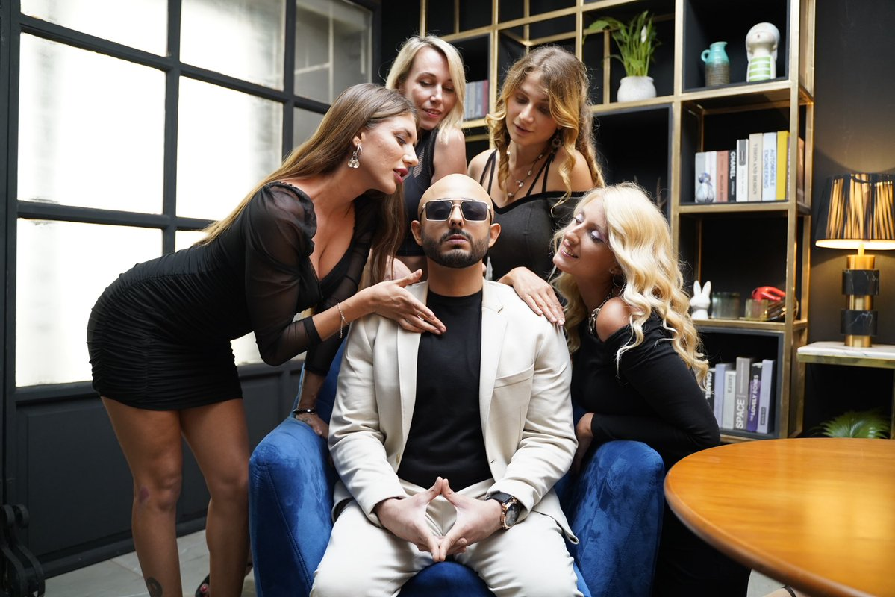

For You
Following
settings
public
Every one can see
image
gif_box
ballot
sentiment_satisfied
calendar_clock
location_on
Show me 200 Post
Ajey Nagar  @CarryMinati . 3h
@CarryMinati . 3h
@CarryMinati . 3h
What is your colur.... fill in the blanks

tooltip
542
repeat
457
favorite
8.9k
equalizer
12.9k
Broken Lines
@broken_l23 . 3d
@broken_l23 . 3d
Maturity is when you don't force people to choose you.
tooltip
882
repeat
957
favorite
18.9k
equalizer
112.9k
Elon Musk
@Elon_musk . 8h
@Elon_musk . 8h
GPT becomes more stronger...
tooltip
5.21k
repeat
24k
favorite
1.9m
equalizer
22.9m
Musk Fan
@the_musk_fan_07 . 1mo
@the_musk_fan_07 . 1mo
Elon Musk: My Hero, Turning Dreams into Reality.
tooltip
892
repeat
300
favorite
88.9k
equalizer
1.9m
Qutes Thinker
@it_me_writer_4_27 . 1mo
@it_me_writer_4_27 . 1mo
Some souls suffer silentlyüåøüí´...

tooltip
89.2k
repeat
33.50k
favorite
4.9b
equalizer
5.9b
Avengers
@the_avengers_7 . 5d
@the_avengers_7 . 5d
Iconic heroes like Iron Man, Cap, and Thor protect the world from powerful enemies! ü¶∏‚Äç‚ôÇÔ∏èüåç

tooltip
90.4k
repeat
80k
favorite
88.9m
equalizer
1b
Tony Stark
@i_am_iron_man . 3h
@i_am_iron_man . 3h
Tony Stark's real superpower is his unparalleled intellect, turning ideas into world-saving
technology. üí°ü§ñ\
tooltip
8.2m
repeat
300k
favorite
98.9m
equalizer
1.9b
Spidey
@spider_man_Avenger . 11h
@spider_man_Avenger . 11h
Haunted by the memory of Gwen, Spider-Man carries the weight of his greatest failure with every
swing. üï∏Ô∏èüíî
tooltip
1m
repeat
30m
favorite
8b
equalizer
12.9b
The Kal_El
@the_super_man . 1mo
@the_super_man . 1mo
The thunderous impact of Superman's might shakes the very foundation of heroism. ‚ö°ü¶∏‚Äç‚ôÇÔ∏è
tooltip
12.9k
repeat
30k
favorite
88m
equalizer
1.9b
Black Panther
@the_panther_worier . 8h
@the_panther_worier . 8h
Wakanda's silent guardian, the Black Panther, prowls with grace, embodying strength and wisdom
in every shadow. üêæüëë
tooltip
1m
repeat
500k
favorite
7.3b
equalizer
8.9b